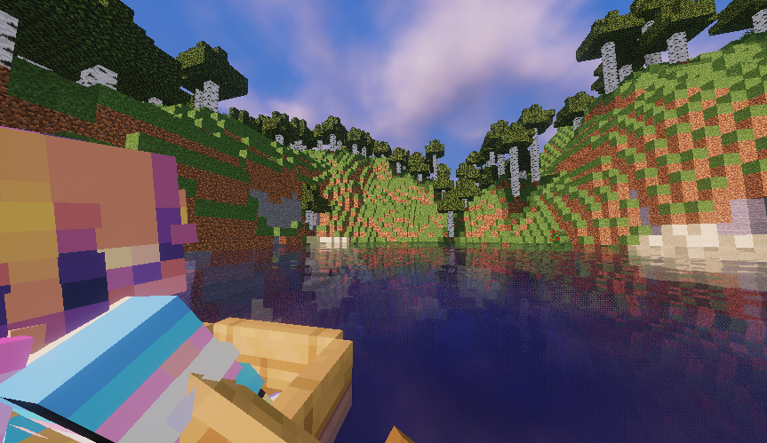
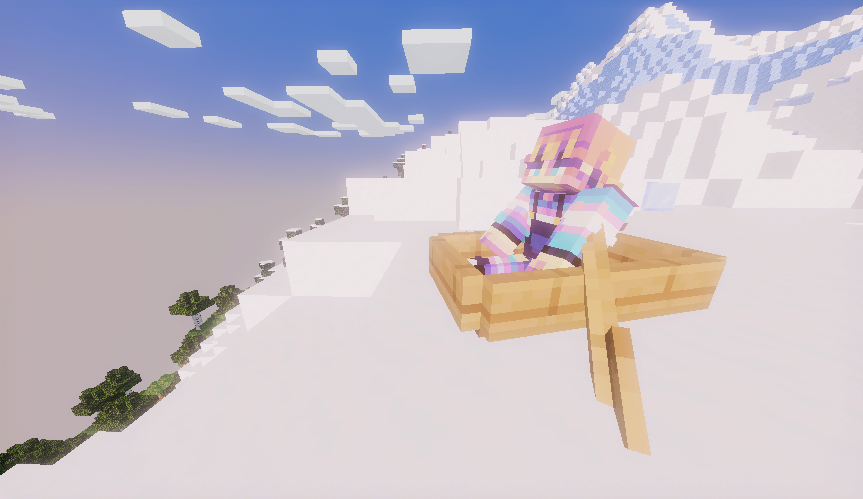

Comparing Shaders in Minecraft 1.21 Again!
Well, I'm back! This time, I've been recommended BSL Shaders and Pastel Shaders. Pastel is based off of BSL, so there might be no difference, or there might be a big difference.
We'll be pitting the last winner - Mellow - against BSL and Pastel. Hope you enjoy!
No Shaders (Vanilla)
Performance - 6/6
Rain Performance - 6/6
Water Performance - 6/6
Overall Performance - 6/6
Beauty - 3/6
Water Beauty - 3/6
Overall Beauty - 3/6
Overall - 4.5/6
Mellow (Previous winner!)
Performance - 5/6
Rain Performance - 4/6
Water Performance - 4/6
Overall Performance - 4.33/6
Beauty - 4/6
Water Beauty - 5/6
Overall Beauty - 4.5/6
Overall - 4.4/6 (ish)
Comments - Just as I expected!
BSL Shaders
Performance - 1/6
Rain Performance - 1/6
Water Performance - 1/6
Overall Performance - 1/6
Beauty - 5/6
Water Beauty - 5/6
Overall Beauty - 5/6
Overall - 3/6
Comments - Well... uhhhhh.... not much to say. Looks good, but frames dropped down to 1 for about 7 seconds on terrain gen.
Pastel Shaders (I'm slightly scared now...)
Performance - 1/6
Rain Performance - 1/6
Water Performance - 1/6
Overall Performance - 1/6
Beauty - 5/6
Water Beauty - 4/6
Overall Beauty - 4.5/6
Overall - 2.75/6
Comments - Sure, it looks okay. Mostly like BSL except with (in my opinion) worse water.
Winner
Well, Mellow won!
1. Mellow - 4.4/6
2. BSL - 3/6
3. Pastel - 2.75/6
Ending
Well, I wasn't expecting that... In curiosity, I decided to try the Aurora feature in BSL and Pastel. Or, at least, I was going to. It turns out that I cannot get Aurora working on BSL. Pastel's Aurora looks really cool, but with a 0.5/6 performance rate...
Anyways, that's all!
Have a good whatever time it is!
Goodbye!
- Hazel
Some images of Mellow Shaders!

